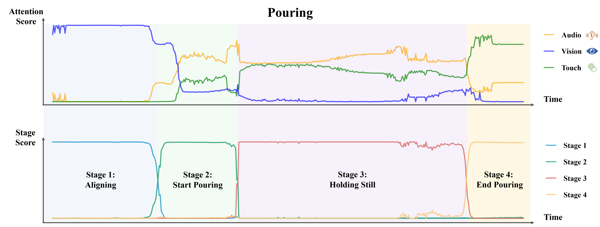

Gap Mitigation
The performance gap of uni-modal encoders is reduced by MMCosine, with the weak modality and the joint model boosted.
Humans possess a remarkable talent for flexibly alternating to different senses when interacting with the environment. Picture a chef skillfully gauging the timing of ingredient additions and controlling the heat according to the colors, sounds, and aromas, seamlessly navigating through every stage of the complex cooking process. This ability is founded upon a thorough comprehension of task stages, as achieving the sub-goal within each stage can necessitate the utilization of different senses. In order to endow robots with similar ability, we incorporate the task stages divided by sub-goals into the imitation learning process to accordingly guide dynamic multi-sensory fusion. We propose MS-Bot, a stage-guided dynamic multi-sensory fusion method with coarse-to-fine stage understanding, which dynamically adjusts the priority of modalities based on the fine-grained state within the predicted current stage. We train a robot system equipped with visual, auditory, and tactile sensors to accomplish challenging robotic manipulation tasks: pouring and peg insertion with keyway. Experimental results indicate that our approach enables more effective and explainable dynamic fusion, aligning more closely with the human fusion process than existing methods.
The performance gap of uni-modal encoders is reduced by MMCosine, with the weak modality and the joint model boosted.
The learned angles between uni-modal features and ground-truth class centers become more compact. MMCosine can lower the intra-class angular variation and maximize the discriminability of cosine metric.
@article{ruize2023mmcosine,
author={Ruize, Xu and Ruoxuan, Feng and Shi-xiong, Zhang, and Di, Hu},
booktitle={ICASSP 2023-2023 IEEE International Conference on Acoustics, Speech and Signal Processing (ICASSP)},
year={2023},
organization={IEEE},
}